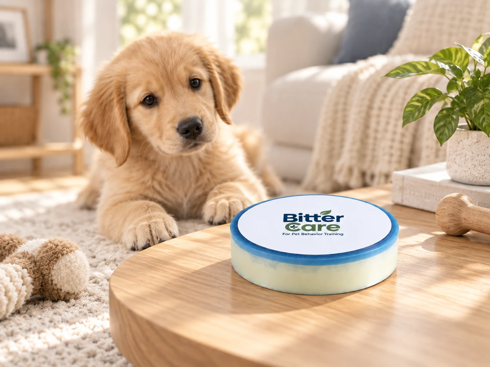
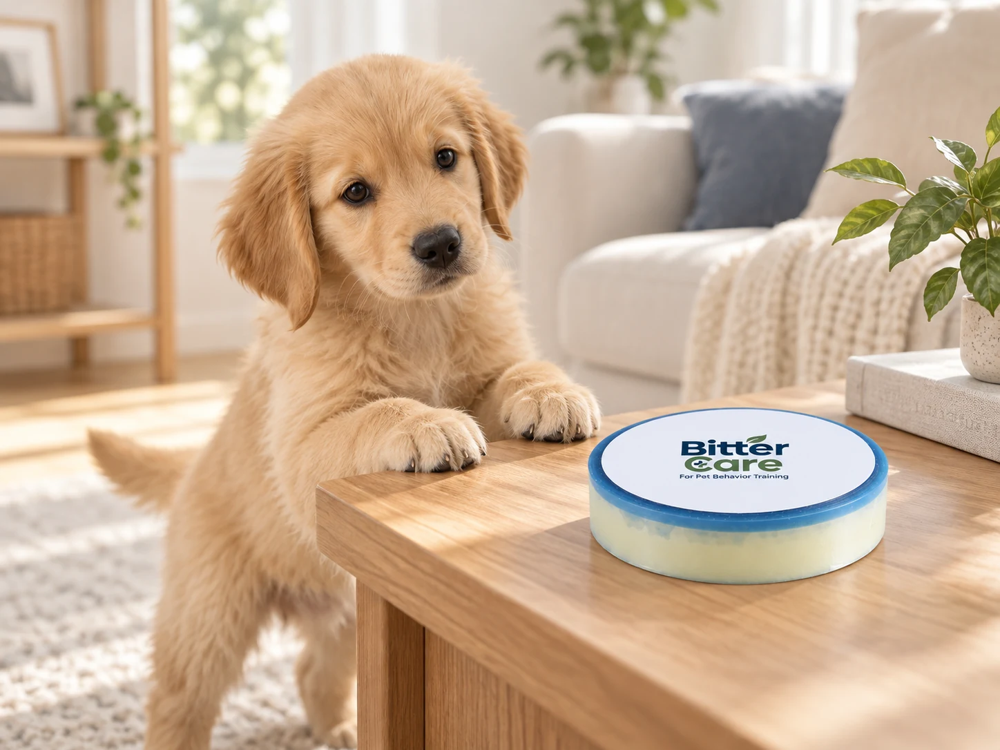

長年の研究の歴史
2世紀以上にわたる科学の歴史を受け継ぐ原料メーカー。
よく噛む場所に小さなケアを。ビターケアの仕組みから、ご家庭での使い方までご紹介します。


ビターケアは、よく口をつける生活面に苦味を加える行動ケア補助ステッカーです。広くスプレーするのではなく、気になる場所に集中して貼れます。英国産プレミアム苦味原料を使用しています。
 Macfarlan Smith · Veranova UK
Macfarlan Smith · Veranova UK
Macfarlan Smithの技術的な歴史を受け継ぐ、英国Veranovaのプレミアム苦味原料を使用しています。
2世紀以上にわたる科学の歴史を受け継ぐ原料メーカー。
苦味成分デナトニウムベンゾエートの原産地から丁寧に。
苦味原料の特性と製品の使用条件を合わせて考えています。
よく噛む生活用品の表面に苦味による反応を加え、噛んでもよい代替品と観察を組み合わせます。
プレミアム苦味原料と大豆油ベースのインクを組み合わせた開発経験を、さまざまな印刷・コーティング方式へ展開しています。
英国産は苦味原料の原産地を示します。大豆油ベースのインクはBitterINKの開発背景であり、このステッカーのすべてのコーティングを示すものではありません。反応には個体差があります。
複雑な訓練器具ではなく、場所を見つけて観察するための補助ツールです。
実際に口をつける家具、ドア枠、コード保護箇所などを確認します。
気になる場所より少し広めに切って準備します。
表面を拭いて完全に乾かし、接触位置に密着させます。
初めの数日は様子を見て、位置の調整や交換をしてください。
性格分析は無料で始められます。製品は別途購入で、結果は行動を理解するための参考情報です。
貼る場所から製品についてのご質問まで。内容を確認後、メールでお返事します。